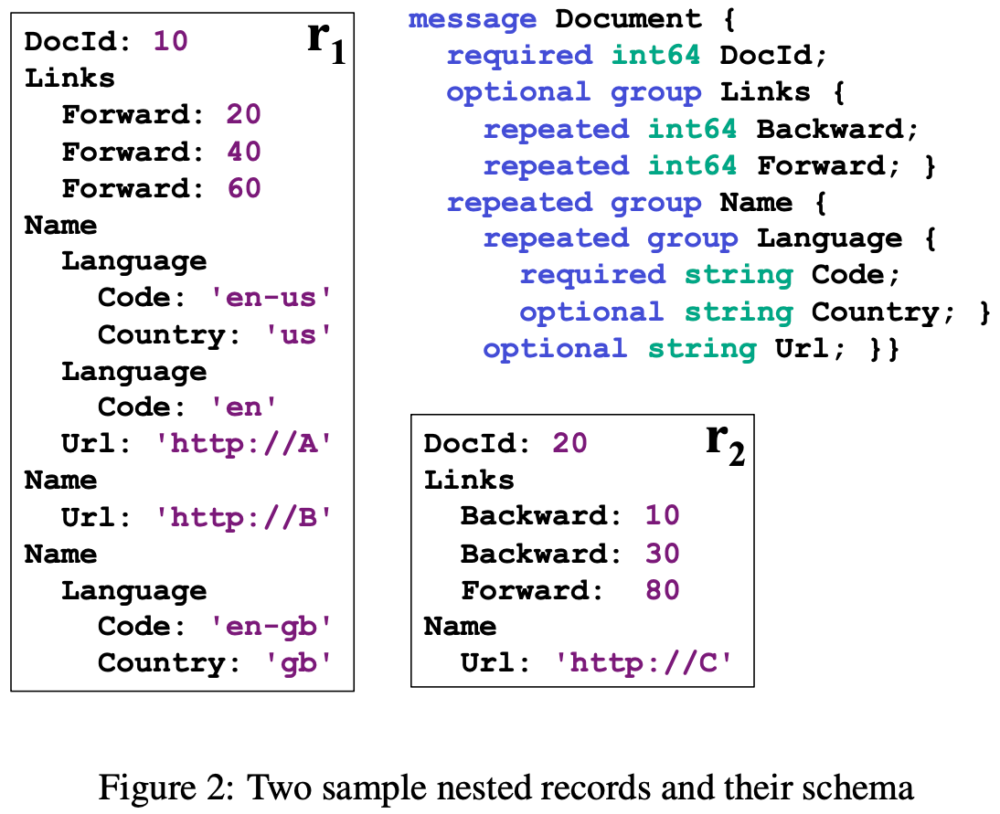

원본 논문
- 이 글은 Dremel: interactive analysis of web-scale datasets, VLDB’10 논문을 읽고 정리한 글입니다.
- 별도의 명시가 없으면, 본 논문에서 그림을 가져왔습니다.
Arbitrary section (
3.*)
- 내용 정리를 위해 임의로 구분지은 section 입니당. 논문에는 이런 section 은 없음
3.1. Terminology
- Dremel 의 Data Model 은 기본적으로 YAML (혹은 JSON) 와 비슷한데, 중복된 key 가 존재할 수 있다는 차이점이 있다고 생각하면 된다.
- 이런 생각을 기반으로 다음과 같은 정의를 이해해 보자:
- 일단 는 Atomic type 이라고 부른다. 이것은 record 의 type 이기도 하고, nested field schema 의 type 이기도 하다.
- 이게 뭔소린지 모르겠다면 OOP 에서의 객체라고 생각해도 된다.
- Record 가 하나의 객체로서 표현될 수 있고, 객체 안에 또 다른 객체가 nested 될 수 있다는 점을 생각하면 이해가 될 것이다.
- 은 literal type 을 의미한다. 그냥
int,float,string등등이라고 생각하면 된다. - 이 아니라면, 여러개의 attribute 를 가지는 group () 으로 정의된다.
- 은 번째 Attribute (field) 의 type 이다. 위에서 보다시피 이놈의 type 도 로 정의된다.
- 즉, nesting 인 것.
- 이 attribute 는 세가지로 분류될 수 있고, 이것이 에 들어있는 내용이다.
- 는 Repeated Field 라는 뜻으로, 해당 attribute 가 여러번 등장할 수 있음을 의미한다.
- 는 Optional Field 라는 뜻으로, 해당 attribute 가 0번 혹은 1번 등장할 수 있음을 의미한다.
- 위의 두 명시가 없다면, 이것은 Required Field 임을 의미한다. 즉, 반드시 1번 등장해야 한다는 것을 의미한다.
- 여기서 type 는 그 아래에 여러 attribute 를 가질 수 있고, 이 attribute 는 또 다시 로써 recursive 하게 정의된다는 것을 알 수 있다.
- 이 말은 attribute 아래에 또 attribute 를 가질 수 있다는 것을 의미한다.
- 이런 Nested attribute 에 대해서는 path 로 구분짓고, 이 path 는 각 attribute 들의 이름을
.으로 연결하는 것으로 정의된다. - 말을 이렇게 하니까 어려워보이는데, 별거 아니다. 객체의 field 를 참조할때
.를 사용하는 것과 동일하다.
3.2. Example

- 위 그림은 예시로 Document 라는 message 를 정의하는 schema 와 Document record 두개이다.
- 몇가지만 살펴보면
- 일단
DocId는int64type 을 가지는 Required Field 이다. 따라서 두 record 에서도 이 field 는 모두 등장하는 것을 확인할 수 있다. - 그리고
Name은 group type 으로, Repeated Field 이다. 그래서 record 을 보면 이 field 가 3번 등장하는 것을 볼 수 있다. Name.Urlfield 는stringtype 을 가지는 Optional Field 이다. 그래서 이 field 는Name아래에서 등장하기도 하고 등장하지 않기도 하다는 것을 확인할 수 있다.
- 일단
- 이런 data model 을 사용하기 위한 library 들이 C++ 이나 Java 등으로 구현되어 제공되고, 빠른 Map-reduce 연산을 위해 빠르게 record 를 serialize-deserialize 하도록 구현되어 있다고 한다.